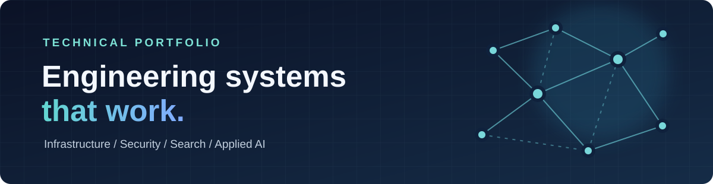
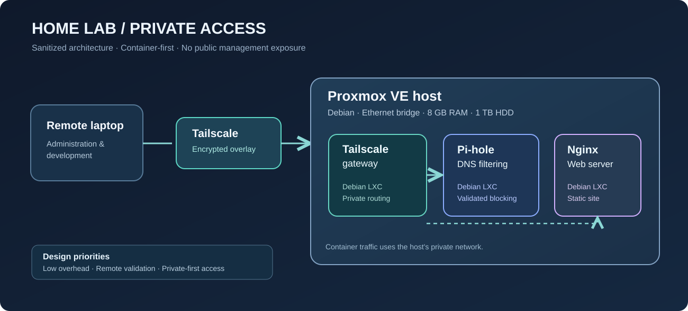

Proxmox Home Lab
Repurposed an 8 GB desktop into a container-focused lab offering private remote access, DNS filtering, and Nginx web hosting.
Explore project →I'm Andy Munoz, a computer science graduate and researcher who builds practical projects in Linux infrastructure, Python development, information retrieval, and cybersecurity—and documents the decisions behind them.

Each project emphasizes implementation, decisions, validation, and lessons learned—not simply a list of technologies.
Repurposed an 8 GB desktop into a container-focused lab offering private remote access, DNS filtering, and Nginx web hosting.
Explore project →Developed Python crawling and data-processing workflows for research into links and content across privacy networks.
Explore project →Explored indexing, document representations, text classification, and ranking through implementations and experiments.
Explore project →Experimented with local inference and database-backed workflows for text aggregation and research analysis.
Explore project →Created responsive web layouts and established a private Nginx development environment inside the home lab.
Explore project →Practiced threat modeling, web application security, and hands-on security challenges to develop a defensive mindset.
Explore project →
Built with an 8 GB RAM HP desktop, the lab emphasizes resource efficiency, isolated services, and private remote management.
I use projects to connect computer science concepts with hands-on system administration and software engineering.
My research and academic projects involve Python tooling, web data processing, information retrieval, and machine-learning techniques. I focus on producing explainable, testable workflows.
My home lab provides a place to learn Linux, virtualization, networking, access controls, and operational troubleshooting through practical deployment and validation.
Understand resources, requirements, dependencies, and security trade-offs before implementation.
Break a system into services and document configuration changes as each part becomes operational.
Verify behavior with commands, logs, and network tests; record what failed and what fixed it.
The repository contains the full home-lab build journal, project write-ups, and the engineering decisions behind each system.